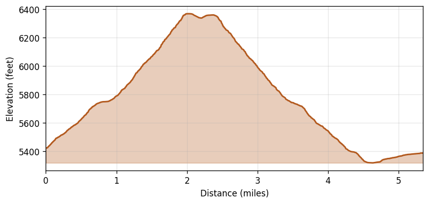

Mt Rainier - Sunrise Area
Region: Mt. Rainier National Park, WA
Date: 2023-08-19 (10:27–13:08 PDT)
Distance: 5.35 miles
Gain: 1,017 feet
Duration: 2h 41m (2h 6m moving, 35m stopped)
Avg speed: 2.55 mph moving / 1.99 mph overall
Weather: Clear. Temps 62–70°F, ESE winds 4–5 mph, no precipitation.
Route
Elevation Profile
